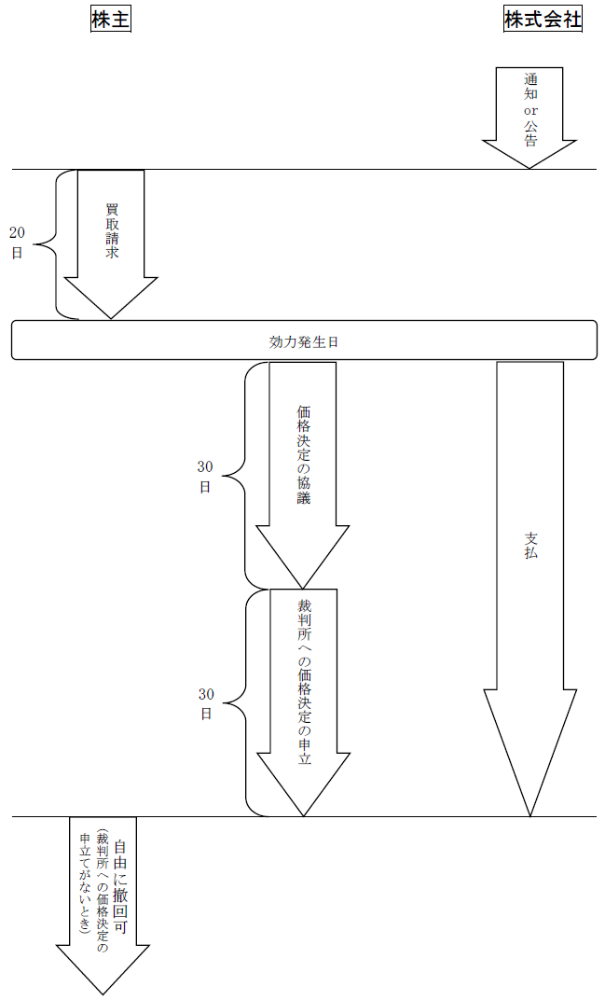

第２編 株式会社
第３章 株式
第８節 株式の消却・併合・分割・無償割当て・単元株
Ⅳ 株式無償割当て
：株主（種類株式発行会社では、ある種類の種類株主）に対して、その有する株式数に応じて、新たに払込みをさせないで、株式を無償で割り当てること（会社法185条）
ex. 甲種類株式の株主に、甲種類株式1株に対して乙種類株式3株を無償で割り当てることができる。
株式の分割との比較
| 株式の分割 | 株式無償割当て | |
| ①増加する株式の種類 | 同一種類 | 同一種類又は異なる種類 |
| ②自己株式がある場合の取扱い | 増加する | 割当てがされない |
| ③自己株式の交付の可否 | 不可 | 可 |
①株式の分割では同一種類の株式の数が増加するのに対し、株式無償割当てでは同一又は異なる種類の株式を交付することができる。
②株式の分割では自己株式の数も増加するのに対し、株式無償割当てでは自己株式については割当てが生じない（会社法186条2項）。
③株式の分割では自己株式の交付はできないのに対し、株式無償割当てでは自己株式を交付することができる。
1. 決議事項
株式無償割当てを行う場合には、その都度、
①株主に割り当てる株式の数（種類株式発行会社の場合には、種類及び種類ごとの数）又はその数の算定方法
②株式無償割当ての効力発生日
③種類株式発行会社の場合は無償割当てを受ける株主の有する株式の種類
について、定款に別段の定めがある場合を除き、以下の機関において決定しなければならない（会社法186条1項、3項）。
| 取締役会設置会社 | 取締役会非設置会社 |
| 取締役会の決議 | 株主総会（普通決議） |
なお、上記①の定めは、当該株式会社を除く株主の有する株式の数に応じて割り当てることを内容としなければならない（会社法186条2項）。
2. 通知
株式会社は、株式無償割当ての効力の発生日後遅滞なく、株主及びその登録株式質権者に対し、その株主が割当てを受けた株式の数を通知しなければならない（会社法187条2項）。
株式無償割当ての効力は、株式無償割当ての効力発生日に生じ、株主はその日に無償割当てを受けた株式の株主となる（会社法187条1項）。なお、株式の無償割当ては、新たに払込みをさせるものではないため、資本金は増加しない。
1. 株式の無償割当て
株式無償割当ての場合、新たに株式を発行した場合に、登記事項が発生する。
【申請例42 株式の無償割当て】
事例： 令和○年5月22日、別紙1の登記がなされた株式会社において、取締役会で、令和○年6月28日をもって、当該株式会社の株式1株に1株を無償で割り当てるとの決議がされた。なお、当該株式会社は、自己株式を保有していない。
別紙1
登記事項証明書の内容の抜粋
| 発行可能株式総数 | 6000株 |
| 発行済株式の総数並びに種類及び数 | 発行済株式の総数 1500株 |
| 1. 登記の事由 1. 登記すべき事項 1. 登録免許税 1. 添付書面 | 株式無償割当て 令和○年6月28日変更 発行済株式の総数 3000株 金3万円 取締役会議事録 1通 委任状 1通 |
|---|
(1) 登記の事由
「株式無償割当て」と記載する。
(2) 登記すべき事項
変更年月日と発行済株式の総数を記載する。
(3) 添付書面
①株主総会議事録又は取締役会議事録
株式の無償割当てを決議した株主総会の議事録（普通決議の要件を満たすもの）又は取締役会の議事録
②種類株主総会議事録
種類株式発行会社において、ある種類の株式の種類株主に損害を及ぼすおそれがあるときは、当該種類の株式の種類株主を構成員とする種類株主総会の議事録を添付する（特別決議の要件を満たすもの。会社法322条1項3号）。
③株主の氏名又は名称、住所及び議決権数等を証する書面（株主リスト）（商登規61条3項）
株主総会又は種類株主総会で決議したとき。具体的には、代表者作成の証明書がこれに当たる。
④委任状
(4) 登録免許税
申請件数1件につき、金3万円（登免法別表1.24(1)ツ）。
Ⅴ 単元株制度
：株式の一定数をまとめたものを1単元とし、株主の議決権は1単元に1個とする制度（会社法188条1項）
単元株制度は、本来、完全な株式としての権利を有すべきところ、単元未満株式には議決権を認めない（定款の定めによって、さらに権利を制限できる）という点で権利を縮小する制度であり、株主管理コストの軽減を主たる目的とする。
1. 設定方法
株式会社は、その発行する株式について、一定の数の株式をもって株主が株主総会又は種類株主総会において1個の議決権を行使することができる1単元の株式とする旨を定款で定めることができる（会社法188条1項）。
種類株式発行会社においては、単元株式数は株式の種類ごとに定めなければならない（会社法188条3項）。
ex. 「普通株式 2株、優先株式 4株」のように定める。
1株の大きさ、権利の内容が種類ごとに異なるため、むしろ一律に1単元の数を定め1議決権を付与してしまうと、実質的に株主間に不平等が生じるおそれがあるからである。
2. 単元株式数の制限
1単元の株式の数をあまりに大きく設定することを許すと、株主の議決権を不当に害することになるので、1単元の数は、1000及び発行済株式の総数の200分の1を超えることはできない（会社法188条2項、会社施行規34条）。
ex1. 発行済株式の総数が20000株である場合、1単元とできる株式は、最大で100株である。1000以下だが、100株を超えると発行済株式の総数の200分の1を超えてしまうからである。
ex2. 発行済株式の総数が200万株である場合、1単元とできる株式は、最大で1000株である。発行済株式の総数の200分の1は10000だが、それだと1000を超えてしまうからである。
1. 設定
(1) 原則
定款変更に当たるため、株主総会の特別決議による（会社法188条1項、466条、309条2項11号）。
(2) 例外
次の①②のいずれにも該当する場合は、以下の機関によって定款変更をすることができる（会社法191条）。株主総会の決議を経ずに定款変更ができる非常に珍しい場合である。
| 取締役会設置会社 | 取締役会非設置会社 |
| 取締役会の決議 | 取締役の決定（取締役の過半数の一致） |
①株式の分割と同時に単元株式数を増加し、又は単元株式数についての定款の定めを設けるものであること
②ⅰに掲げる数が、ⅱに掲げる数を下回るものでないこと
ⅰ 当該定款の変更後において各株主がそれぞれ有する株式の数を単元株式数で除して得た数
ⅱ 当該定款の変更前において各株主がそれぞれ有する株式の数（単元株式数を定めている場合にあっては、当該株式の数を単元株式数で除して得た数）
ex. 定款に2株を1単元とする旨の定めがある株式会社において、1株を2株とする株式の分割を行う場合には、単元株式数を変更し、4株を1単元とする定款の変更を株主総会決議を経ることなくすることができる。
2. 減少・廃止
単元株制度を採用した株式会社が、その後、1単元の株式数を減少し、又は、単元株制度を廃止する場合は、株主に利益をもたらす行為なので、以下の機関によって定款変更をすることができる（会社法195条1項）。株主総会の決議を経ずに定款変更ができる非常に珍しい場合である。
| 取締役会設置会社 | 取締役会非設置会社 |
| 取締役会の決議 | 取締役の決定（取締役の過半数の一致） |
この場合、株主に対して通知又は公告することが必要である（会社法195条2項、3項）。株主総会の決議を経ていないため、株主に知らせる必要があるからである。
1. 意義
単元株式数に満たない数の株式を有する株主は、その有する単元未満株式について、株主総会及び種類株主総会において議決権を行使することはできない（会社法189条1項）。
2. 単元未満株主の権利
(1) 原則
単元未満株主は、その有する単元未満株式について、株主総会・種類株主総会における議決権（会社法189条1項）及び議決権の存在を前提とする株主総会・種類株主総会に関する権利（会社法297条1項、303条2項、305条1項、325条参照）を行使することができないほかは、株主としての権利を有するのが原則である。
(2) 定款による制限
定款で株主権の全部又は一部を行使できないと定めることが認められる（会社法189条2項柱書、847条1項本文括弧書）。
もっとも、単元未満株式も株式であるため、単元未満株式の代替物というべき権利や、代替物とはいえないまでも株主管理コストの節減を理由としては制限するのが不合理である権利、株式の本質的な権利については、制限をすることは認められない。すなわち、以下のような権利は制限することができない（会社法189条2項）。

3. 単元未満株式についての株券
株券発行会社は、定款で、単元未満株式に係る株券を発行しない旨を定めることができる（会社法189条3項）。コスト節減のためである。
4. 単元未満株式の買取請求権
株主は、単元未満株式について株式会社に対して買取請求権を有する（会社法192条）。単元未満株式は、株式であるが、議決権が行使できない等、一般の株式に比べて譲渡が困難であることから、買取請求権が認められている。
5. 単元未満株式の売渡請求制度
株式会社は、単元未満株主がその有する単元未満株式と併せて1単元の株式となる数の株式を売り渡すべき旨を株式会社に請求することができる旨を、定款をもって定めることができる（会社法194条1項）。定款で定めるべきこととされたのは、募集株式の発行等の手続によらないで、自己株式の処分を認めるという点で例外的な制度であること及び本制度が株主へのサービス規定であることが理由である。
この定款規定がある場合に、単元未満株主の請求があったときには、その請求があった時に株式会社が売り渡すべき単元未満株式を有しないときを除き、自己株式をその単元未満株主に売り渡さなければならない（会社法194条3項）。
【申請例43 単元株式数 設定】
事例： 令和○年6月28日、株主総会において、単元株制度を導入し、単元株式数を10株とする定めを設ける定款変更の決議がなされた。
| 1. 登記の事由 1. 登記すべき事項 1. 登録免許税 1. 添付書面 | 単元株式数の設定 令和○年6月28日設定 単元株式数 10株 金3万円 株主総会議事録 1通 株主の氏名又は名称、住所及び議決権数等を証する書面（株主リスト） 1通 委任状 1通 |
|---|
| 単元株式数 | 10株 | 令和○年6月28日設定 |
| 令和○年7月5日登記 |
1. 登記の事由
「単元株式数の設定（変更）」「単元株式数の定めの廃止」と記載する。
2. 登記すべき事項
【設定（変更）】
「年月日設定（変更）
単元株式数 10株」等と記載する。
※種類株式発行会社の場合は、以下のように記載する。
「年月日設定（変更）
単元株式数 Ａ種類株式 10株
Ｂ種類株式 1株」
【廃止】
「年月日単元株式数の定め廃止」等と記載する。
3. 添付書面
①株主総会議事録
単元株式数の定款変更の決議をした株主総会の議事録（特別決議の要件を満たすもの）
※取締役の過半数の一致を証する書面又は取締役会議事録
取締役の決定又は取締役会の決議によって定款変更ができる場合に該当するとき
②種類株主総会議事録
種類株式発行会社において、単元株式数の変更を行うことが、ある種類の株式の種類株主に損害を及ぼすおそれがあるときは、当該種類の株式の種類株主を構成員とする種類株主総会の議事録を添付する（特別決議の要件を満たすもの。会社法322条1項1号）。
③株主の氏名又は名称、住所及び議決権数等を証する書面（株主リスト）（商登規61条3項）
株主総会で決議したとき。具体的には、代表者作成の証明書がこれに当たる。
④委任状
4. 登録免許税
申請件数1件につき、金3万円（登免法別表1.24(1)ツ）。
第９節 反対株主の株式買取請求権
会社法は、一定の株主総会決議に反対した株主等が、株式会社に対して、自己の有する株式を公正な価額で買い取るよう請求することを認めている。
反対株主の株式買取請求権は、以下の場合に認められる。
| 請求できる場合 | 請求できる株式 |
| ①発行する全部の株式の内容として譲渡制限の定め（会社法107条1項1号）を設ける定款の変更をする場合（会社法116条1項1号） | 全部の株式 |
| ②ある種類の株式の内容として譲渡制限の定め（会社法108条1項4号）、又は、株主総会決議によってその全部を取得する旨の定め（会社法108条1項7号）を設ける定款の変更をする場合（会社法116条1項2号） | 会社法111条2項各号に列挙されている種類株式 |
| ③種類株式の内容として、種類株主総会の決議を要しない旨の定め（会社法322条2項）がある種類株式発行会社が、会社法116条1項3号イからヘに掲げる行為（会社法322条1項2号～6号及び単元株式数についての定款の変更）をする場合において、ある種類株式を有する種類株主に損害を及ぼすおそれがある場合（会社法116条1項3号） | 損害が及ぶおそれがある種類株式 |
| ④株式の併合により1株に満たない端数が生じる場合（会社法182条の4） ex. 併合の割合において、3株を1株にする場合、2株以下については、端数となる。 端数処理に基づく競売（会社法235条1項）は、売却代金が安くなってしまうことが通常だからである。 |
株式の併合により1株に満たない端数となるもの |
| ⑤事業譲渡等をする場合（会社法469条、470条） | 全部の株式 |
| ⑥吸収合併、吸収分割、株式交換をする場合（会社法785条、786条、797条、798条） | 全部の株式 |
| ⑦新設合併、新設分割、株式移転をする場合（会社法806条、807条） | 全部の株式 |
※請求できない場合の例
①取得請求権付株式の定めを設ける定款の変更をする場合
株主に有利な変更だからである。
②取得条項付株式の定めを設ける定款の変更をする場合
（種類）株主全員の同意が必要だからである。
③資本金の額の減少
④解散
⑤組織変更
1. 原則的規定
各行為をするために株主総会（種類株主総会を含む）の決議を要する場合は、以下の株主が反対株主に該当する。
(1) 当該株主総会に先立って当該行為に反対する旨を当該株式会社に対し通知し、かつ、当該株主総会において当該行為に反対した株主（その株主総会において議決権を行使することができる者に限る）
(2) その株主総会において議決権を行使することができない株主
2. 上記1.以外の場合
上記1.以外の場合には、全ての株主（略式組織再編等の場合の特別支配会社を除く）。
【新設型組織再編以外の反対株主の株式買取請求の流れ】

1. 株式会社からの通知・公告
上記の表の①から⑦の行為をしようとする株式会社は、上記２の株主に対し、効力発生日の20日前までに（新設合併等においては、新設合併契約等の承認を受ける株主総会の決議から2週間以内）、通知又は公告しなければならない（会社法116条3項・4項、182条の4第3項、181条1項、469条3項・4項、785条3項・4項、797条3項・4項、806条3項・4項）。
2. 株主の買取請求
請求は、効力発生日の20日前から効力発生日の前日までに（新設合併等においては、消滅株式会社等がする通知又は公告をした日から20日以内に）、その買取請求に係る株式の数（種類株式発行会社にあっては、株式の種類及び種類ごとの数）を明らかにしてしなければならない（会社法116条5項、 182条の4第4項、 469条5項、785条5項、797条5項、806条5項）。
3. 買取請求の撤回の原則禁止とその潜脱防止
(1) 買取請求の撤回の原則禁止
株式買取請求をした株主は、原則として、株式会社の承諾を得なければ請求の撤回をすることができない（会社法116条7項、182条の4第6項、469条7項、785条7項、797条7項、806条7項）。株式買取請求をしておいて、「株価が上がったから撤回して市場で売ろう」とする株主の行為を防止するための規定である。
ただし、買取価格の決定について協議が調わない場合において、効力発生日から（新設合併等においては、設立会社の成立から）60日以内に裁判所に価格決定の申立てがされないときは、その期間満了後は、株主は、いつでも、株式買取請求の撤回をすることができる（会社法117条3項、182条の5第3項、470条3項、786条3項、798条3項、807条3項）。
(2) 株券の提出
この請求の撤回の原則禁止をより実効化するために、反対株主が株式買取請求をしておきながら、一方で株式を第三者に譲渡すること（これにより、事実上、会社の同意なしに買取請求を撤回することができてしまう）を防ぐ方策として、反対株主は、株券が発行されている株式について株式買取請求をしようとするときは、株券を提出しなければならないこととされた（会社法116条6項、182条の4第5項、469条6項、785条6項、797条6項、806条6項）。また、株式買取請求に係る株式については、譲受人による名義書換請求をすることができない（会社法116条9項、182条の4第7項、469条9項、785条9項、797条9項、806条9項）。
4. 価格の決定・支払
株式買取請求があった場合において、株式の価格決定について、協議が調ったときは、株式会社は、効力発生日から（新設合併等においては設立会社の成立の日から）60日以内にその支払をしなければならない（会社法117条1項、182条の5第1項、470条1項、786条1項、798条1項、807条1項）。
価格の決定についての協議が効力発生日から（新設合併等においては設立会社の成立の日から）30日以内に調わないときには、株主又は株式会社はその期間の満了後30日以内に裁判所に価格の決定の申立てをすることができる（会社法117条2項、182条の5第2項、470条2項、786条2項、798条2項、807条2項）。
5. 価格決定前の支払制度
株式買取請求権が行使された場合において、裁判所に価格決定の申立てがされたときは、株式会社は、裁判所が決定した価格に対して法定利率による利息をも支払わなければならないため（会社法117条4項等）、価格決定までに長期を要した場合、株式会社の負担する法定利息支払義務は多大なものとなる。また、これを避けるために価格決定前に供託をする方法も考えられるが、現行法においては、それは認められていない。
そこで、平成26年の改正で、株式会社は、株式の価格の決定があるまで、株式会社が公正な価格と認める額を支払うことができるものとされ、これにより法定利息の増加を避けることができるようになった（会社法117条5項、182条の5第5項、470条5項、786条5項、798条5項、807条5項）。
6. 効力発生等
株式買取請求の効力は、株式買取請求権の前提となる各行為（組織再編等）の効力発生日（新設合併等においては設立会社の成立の日）に生じる（会社法117条6項、182条の5第6項、470条6項、786条6項、798条6項、807条6項）。
株式買取請求権を行使した後に剰余金の配当を受ける等、株主が二重に利益を受けることを避けるため、代金支払時ではなく各行為の効力発生日としたものである。